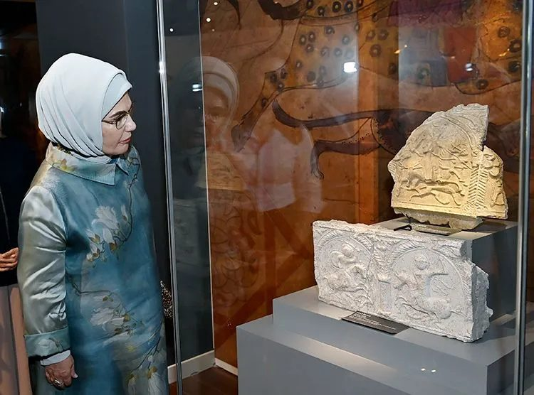

81 İlin İlmegi İstanbul’da Buluştu: Emine Erdoğan’dan Kadın Zanaatkârlara Güçlü Destek Mesajı
Cumhurbaşkanı Recep Tayyip Erdoğan’ın eşi Emine Erdoğan, Rami Kütüphanesi’nde düzenlenen ve 81 ilden kadın zanaatkarların el emeği eserlerini bir araya getiren "ÖZGÜ-Bize Özgü" sergisini ziyaret etti. Türkiye’nin dört bir yanından yükselen dokuma, seramik, geleneksel el sanatları ve yöresel ustalığı yerinde inceleyen Erdoğan, Anadolu kadınlarının üretimdeki rolleri ve kültürel mirasın geleceğe taşınması üzerine dikkat çeken açıklamalarda bulundu

Cumhurbaşkanı Recep Tayyip Erdoğan’ın eşi Emine Erdoğan, Rami Kütüphanesi’nde düzenlenen ve 81 ilden kadın zanaatkarların el emeği eserlerini bir araya getiren "ÖZGÜ-Bize Özgü" sergisini ziyaret etti. Türkiye’nin dört bir yanından yükselen dokuma, seramik, geleneksel el sanatları ve yöresel ustalığı yerinde inceleyen Erdoğan, Anadolu kadınlarının üretimdeki rolleri ve kültürel mirasın geleceğe taşınması üzerine dikkat çeken açıklamalarda bulundu. Öne Çıkan Başlıklar ve Tablo Kültürel Mirasın Taşıyıcıları: Anadolu’nun yüzyıllardır süregelen üretim gelenekleri, kadınların estetik dokunuşlarıyla modern döneme aktarılıyor. Kadın Dayanışması: 81 vilayetin yerel kültürünü tek çatı altında toplayan sergi, kadın gücünün kolektif üretimdeki başarısını gözler önüne seriyor. Ekonomik Ve Sosyal Katkı: El sanatlarının korunması yalnızca kültürel değil, aynı zamanda kadın istihdamı ve yerel kalkınma açısından kritik bir değer taşıyor. Yorum & Analiz: Bu Mesaj Neden Önemli?1. Geleneksel Sanatlar "Müze Eşyası" Olmaktan Çıkıyor
Geleneksel el sanatları çoğu zaman geçmişe ait statik değerler olarak görülür. Ancak Emine Erdoğan'ın vurguladığı "hünerli ellerde yaşayan dayanışma ruhu", bu birikimin sadece sergilenen birer obje değil, bugün de yaşamaya ve ekonomiye katma değer sağlamaya devam eden yaşayan bir organizma olduğunu gösteriyor. 2. Yerel Üretimin Global Potansiyeli
81 ilin özgün kimliğini yansıtan eserlerin modern sergi mekanlarında (Rami Kütüphanesi gibi) buluşması, yerel motiflerin küresel tasarım dünyasına entegre edilmesi için bir sıçrama tahtasıdır. Kadın zanaatkarların emeği, doğru markalaşma ve destekle uluslararası pazarda Türkiye'nin yumuşak gücü (soft power) haline gelebilir.3. Kadın Emeğine Verilen Stratejik Değer
Anadolu'da ev içi üretim veya kısıtlı yerel imkanlarla sürdürülen zanaatkarlık, bu tür platformlar sayesinde görünürlük kazanıyor. Mesajın özünde yer alan dayanışma vurgusu; kırsaldaki veya yereldeki kadın üreticinin yalnız olmadığını, üretiminin ulusal düzeyde karşılık bulduğunu hissettirmesi açısından ciddi bir moral ve motivasyon kaynağıdır. Özetle: "Dayanışma ruhu hünerli ellerde yaşamaya devam ediyor" ifadesi, yalnızca geçmişe saygı duruşu değil; kadının üretimdeki yerini sağlamlaştıran ve kültürel sermayeyi ekonomik değere dönüştüren sürdürülebilir bir Vizyon mesajıdır.